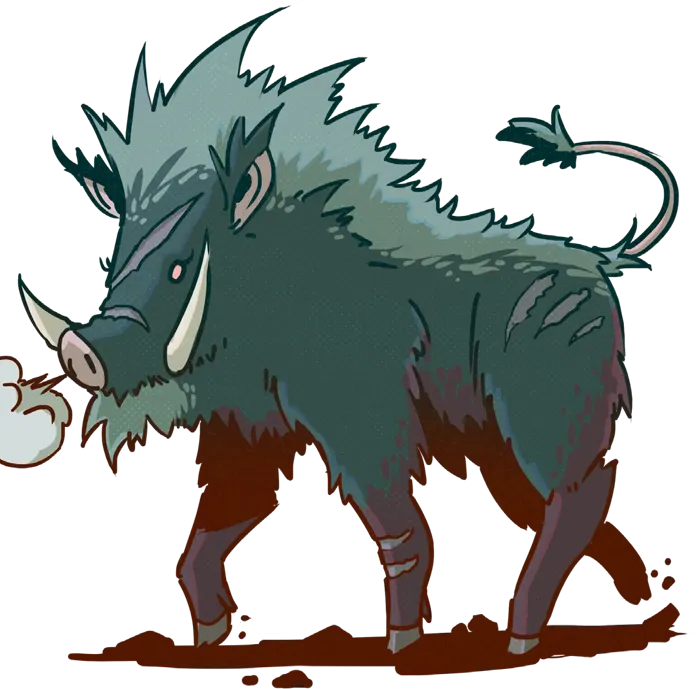

Im Hogwild
Groundbreaker-SchweineKometennasen-MaulwürfeRaubpflanzenMini-SöldnerTrommelvögelFroglins & CroaklinsLöwenmähnenAlle Gefahren A–Z
Nach Größe
Nach Bedrohung
Regeln für Gefahren
Groundbreaker-Schweine
[Titan/Bestial/Boss]S. 234Überblick
Ein schlurfender Berg aus Haut und Haar, mit zwei schlammigen Hauern in einem sabbernden Maul. Das Groundbreaker-Schwein ist ein Tier von gewaltiger Größe und unnatürlicher Kraft …
Titanen folgen bei Schaden besonderen Regeln; die meisten Banden schaffen das nur mit Plan und Voraussicht.
Anzeichen
- Aufgebrochener Boden, Hufabdrücke, fehlende Trüffel.
- Zerfetzte Baumrinde, frisch zertrampelte Pfade.
Verhalten
- Kämpfen gegen herausfordernde Artgenossen.
- TRÜFFEL FINDEN. TRÜFFEL FRESSEN. MEHR TRÜFFEL.
Teile & Züge
HuftrittHauen 3 Stark genug, um mehrere Käfer fliegen zu lassen – trifft bis zu drei Ziele.
Hauer-SchreckenSchlitzen 6 Ein Einzelziel-Zug, der bei einem Desaster in der Reaktion zusätzlich ein Bröckchen und ein Krimskrams zerbricht.
Nicht umsonst so genanntGraben 4 Bricht durch Erde, Holz und Stein wie ein hauerförmiges Messer durch Butter.
Zottel und Borsten– Panzer-Abzug 1 und Härte-Abzug 1 auf alle eingehenden körperlichen Aktionen.
Wahrer Titan– Nur Aktionen mit Giga-Wucht oder auf eine Schwäche markieren ein Herz. Jedes markierte Herz zählt auch als Bruch.

Titanen-Abwehr
- Immun gegen alles außer Gigaschaden und die Schwächen unten.
- Schwach gegen Zähmen und Kümmern – unter der Zottelhaut wartet ein Herz.